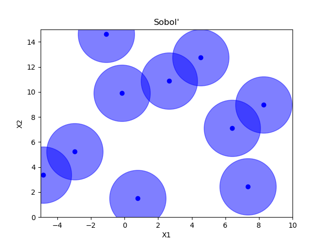
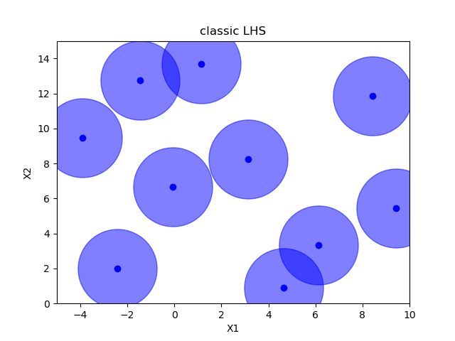

Note
Click here to download the full example code or to run this example in your browser via Binder
Comparing initial sampling methods¶
Holger Nahrstaedt 2020 Sigurd Carlsen October 2019
When doing baysian optimization we often want to reserve some of the early part of the optimization to pure exploration. By default the optimizer suggests purely random samples for the first n_initial_points (10 by default). The downside to this is that there is no guarantee that these samples are spread out evenly across all the dimensions.
Sampling methods as Latin hypercube, Sobol, Halton and Hammersly take advantage of the fact that we know beforehand how many random points we want to sample. Then these points can be “spread out” in such a way that each dimension is explored.
See also the example on an integer space sphx_glr_auto_examples_initial_sampling_method_integer.py
print(__doc__)
import numpy as np
np.random.seed(123)
import matplotlib.pyplot as plt
from skopt.space import Space
from skopt.sampler import Sobol
from skopt.sampler import Lhs
from skopt.sampler import Halton
from skopt.sampler import Hammersly
from skopt.sampler import Grid
from scipy.spatial.distance import pdist
def plot_searchspace(x, title):
fig, ax = plt.subplots()
plt.plot(np.array(x)[:, 0], np.array(x)[:, 1], 'bo', label='samples')
plt.plot(np.array(x)[:, 0], np.array(x)[:, 1], 'bo', markersize=80, alpha=0.5)
# ax.legend(loc="best", numpoints=1)
ax.set_xlabel("X1")
ax.set_xlim([-5, 10])
ax.set_ylabel("X2")
ax.set_ylim([0, 15])
plt.title(title)
n_samples = 10
space = Space([(-5., 10.), (0., 15.)])
# space.set_transformer("normalize")
Random sampling¶
x = space.rvs(n_samples)
plot_searchspace(x, "Random samples")
pdist_data = []
x_label = []
pdist_data.append(pdist(x).flatten())
x_label.append("random")
Sobol¶
Classic Latin hypercube sampling¶
Centered Latin hypercube sampling¶
Maximin optimized hypercube sampling¶
Correlation optimized hypercube sampling¶
Ratio optimized hypercube sampling¶
Halton sampling¶
Hammersly sampling¶
Grid sampling¶
grid = Grid(border="include", use_full_layout=False)
x = grid.generate(space.dimensions, n_samples)
plot_searchspace(x, 'Grid')
pdist_data.append(pdist(x).flatten())
x_label.append("grid")
Pdist boxplot of all methods¶
This boxplot shows the distance between all generated points using Euclidian distance. The higher the value, the better the sampling method. It can be seen that random has the worst performance
fig, ax = plt.subplots()
ax.boxplot(pdist_data)
plt.grid(True)
plt.ylabel("pdist")
_ = ax.set_ylim(0, 12)
_ = ax.set_xticklabels(x_label, rotation=45, fontsize=8)
Total running time of the script: ( 0 minutes 8.241 seconds)
Estimated memory usage: 8 MB